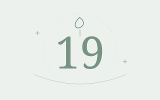

Bioinformatics & genomics
Using sequencing data and computational methods to investigate biological questions, with experience in CRISPR-Cas9 off-target analysis.
Undergraduate Student · Peking University
I'm Zhaoxi Mei, a Bioinformatics undergraduate at Peking University, pursuing a double degree in Sociology. My interests span bioinformatics, social inquiry, and data-driven research.
I am an undergraduate at Peking University, pursuing a B.S. in Bioinformatics in the School of Life Sciences and a double degree in Sociology. My training brings computational analysis into conversation with questions about human life and society.
Beyond coursework, I have analyzed CRISPR-Cas9 off-target sequencing data, led a volunteer teaching team in Fujian, and organized arts and sports activities for my school. I enjoy turning complex questions into structured analysis—and plans into shared work.
My interests connect computational approaches to life sciences with the study of people and society.
Using sequencing data and computational methods to investigate biological questions, with experience in CRISPR-Cas9 off-target analysis.
Learning to connect individual experience with wider social structures, alongside community engagement through volunteer teaching and social survey work.
Statistical analysis and visualization with Python, R, and Stata, and thoughtful use of AI tools for literature search, research, and writing.
Led a 15-member team through a two-week volunteer teaching program serving nearly 100 middle school students. Coordinated preparation, curriculum planning, resources, and daily operations.
Led registration, logistics, scheduling, and on-site coordination for major cultural and sports events, including the Freshman Cup, University Sports Games, and School New Year Gala, serving nearly 500 students.
A CRISPR-Cas9 analysis project connecting high-throughput sequencing, computational workflows, and the safety of gene editing.
Where does CRISPR-Cas9 cleave beyond its intended genomic target?
Processed high-throughput sequencing data and identified and analyzed genome-wide off-target cleavage sites using GUIDE-seq datasets, Python, Bash, and standard bioinformatics tools.
Illustration above is schematic; it does not show experimental results.

On birthday rituals, gifts, university life, and the people who make an ordinary date matter.